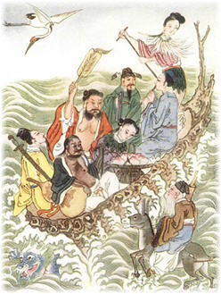
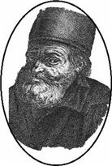
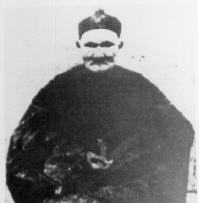
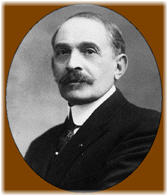

La búsqueda de la inmortalidad [Serie: Vivir para siempre 1]
A principios del siglo XX, la esperanza de vida promedio en el mundo al nacer estaba entre los 20 y los 40 años. Un siglo más tarde, el promedio se ubica en los 78 años, y sigue en aumento.
Es un cambio dramático debido principalmente a la implementación de políticas sanitarias y de nutrición, así como al aumento del conocimiento médico.
Sin embargo, nuestro tiempo sigue siendo limitado. A principios del siglo XXI, todas las personas seguimos envejeciendo y eventualmente muriendo. Sin embargo, cualquiera que se de cuenta de los avances tecnológicos y científicos del último siglo puede preguntarse:
Usando la ciencia: ¿es posible extender el tiempo de vida? ¿Podremos algún día ser inmortales?
Esta anotación es la primera de una serie dedicada al estudio del envejecimiento, la longevidad y las tecnologías que nos harían posible vivir, si no para siempre, al menos durante más tiempo y con mejor calidad de vida.
Comencemos.
La búsqueda de la inmortalidad
La investigación sobre los métodos para evitar o revertir la vejez y vencer a la muerte, probablemente es tan antigua como la humanidad misma.
En épocas tan remotas como las de la antigua China, ya se hablaba de sustancias que permitían alcanzar la inmortalidad. En la alquimia china se consideraba que materiales preciosos y duraderos tales como el jade, el cinabrio y la hematita conferían su longevidad a quien los consumiera. En particular el oro, al ser un metal que no se mancha, era considerado un ingrediente importante del secreto de la longevidad.
(Entre paréntesis: El cinabrio es un mineral -sulfuro de mercurio- de color rojo que se compone en un 85% de mercurio. La hematita es mineral que contiene óxido férrico, conteniendo 70% de hierro. El jade es un tipo de roca preciosa.)
Las recetas de longevidad china también implicaban el uso de mercurio y de arsénico, lo que condujo a que más de un Emperador chino muriera envenenado por intentar prolongar su vida.
Por supuesto, existen historias de inmortales que lograron el secreto de la vida eterna. Un inmortal famoso en China, Corea y Japón es Ma Gu, quien es descrita como una bella mujer joven, de largas uñas y protectora de las mujeres en la mitología china.
También en la mitología griega se hablaba de una sustancia capaz de garantizar la inmortalidad a quien la ingiriera. La ambrosía es conocida junto con el néctar por ser alimento de los dioses, pero también tiene la propiedad de hacer inmortal a quien la ingiera.
Por ejemplo, en uno de los relatos del nacimiento de Aquiles, la madre de éste, Tetis, unta a su hijo con ambrosía para después pasarlo por el fuego, con el propósito de volverlo inmortal. El padre de Aquiles, Peleo, espantado la detiene, quedando solamente el talón sin inmortalizar.
La piedra filosofal
Pasemos ahora a mencionar a los alquimistas occidentales, cuya meta principal era la piedra filosofal, una sustancia capaz de convertir metales comunes en oro, devolver la juventud perdida, y de conferir la inmortalidad.
Muy relacionada con la piedra filosofal está la panacea universal, otra sustancia buscada por los alquimistas, capaz de curar todas las enfermedades y también, de dar vida eterna.
Por supuesto, también hay relatos de alquimistas que triunfaron en su búsqueda. Entre ellos, Alberto Magno, de quien se dice que encontró la piedra filosofal y se la pasó a su discípulo Tomás de Aquino. Aunque lo que queda es una afirmación en sus libros de haber presenciado la creación de oro por transmutación.
Pero sin duda, entre los alquimistas, el nombre más famoso es el de Nicolas Flamel, del cual se cuenta haber alcanzado junto con su esposa la inmortalidad, al igual que el secreto de la transmutación de otros metales en oro. Una historia sobre este personaje, es que un ladrón se introdujo en la casa de Nicolas Flamel después de la muerte de la pareja, buscando el tesoro legendario del alquimista. Al no encontrar nada, se dirigió a la tumba con una pala y una linterna. Aparte de la decepción de no encontrar oro alguno en el ataúd, el ladrón pasó también por la impresión de no encontrar tampoco ningún rastro del cuerpo de Nicolas Flamel.
Ponce de León y la fuente de la juventud
En la Edad Media, con el descubrimiento de América, surgió una de las leyendas más famosas sobre la inmortalidad: La fuente de la eterna juventud.
El conquistador Juan Ponce de León es famoso por su búsqueda de un mítico lugar llamado Bimini, lleno de riqueza y prosperidad. La leyenda narra que escuchó la historia de Bimini de los indígenas arahuacos en Puerto Rico, quienes narraban de un antiguo jefe indígena que había ido en busca de las aguas rejuvenecedoras y nunca había regresado.
Como es sabido, Ponce de León emprendió la búsqueda de la fuente sin tener éxito, muriendo a causa de una herida de flecha en su última expedición.
Mitos de personas con largas vidas
Las leyendas de personas inmortales, o de vidas extraordinariamente largas, existen desde tiempos antiguos. El ejemplo probablemente más conocido en el mundo occidental son las edades listadas en la Biblia, siendo Matusalén con sus 969 años, el personaje bíblico con la vida más larga.
En una época tan cercana a la nuestra como es principios del siglo XX, se reportaron individuos que supuestamente sobrepasaron por mucho la vida promedio de los seres humanos. Algunos de estos personajes son:
- Shirali Muslimov, de origen ruso, 168 años (1805-1973). La prueba con que demostraba su edad era un pasaporte indicando su año de nacimiento en 1805. Originario de la región de Lerik, en la actual Azerbaiyán, zona que ha sido reconocida por expertos como un lugar donde los centenarios son inusualmente comunes.
- Zaro Aga, turco de procedencia, 157 años (1777-1934). Su edad quedó registrada en su certificado de defunción como de 157 años, aunque existían afirmaciones de que tenía164 años al momento de su muerte. Según cuenta la historia (o mito) sobre Zaro Aga, a su muerte su cuerpo fue enviado a los Estados Unidos para ser investigado.
Pero quizás el relato (no comprobado) de la persona más longeva de la edad contemporánea, sea el de Li Ching-Yuen, de quien se dice que vivió nada menos que 256 años, de 1677 a 1933. Sin embargo, el mismo Li Ching-Yuen, afirmaba haber nacido en 1736, lo que lo haría tener al momento de su muerte 197 años.
La afirmación de que este hombre alcanzó los 256 años de edad, proviene de que en 1930 se encontraron registros de que el Gobierno Imperial Chino, había felicitado en 1827 a Li Ching-Yuen por cumplir 150 años. De acuerdo a un artículo del Times en 1933, Li Ching-Yuen había enviudado 23 veces y vivía con su 24ava mujer, la cual tenía 60 años. Su secreto para una larga vida, de acuerdo al mismo artículo del Times, es:
Mantén un corazón tranquilo, siéntate como una tortuga, camina ágilmente como una paloma y duerme como un perro.
Transplantes de monos
Nuestra historia sobre la búsqueda de la eterna juventud y de la inmortalidad no estaría completa sin mencionar a Serge Voronoff, quien a principios del siglo XX, afirmaba haber descubierto la forma de revertir el proceso del envejecimiento.
Voronoff (1866-1951) fue un cirujano francés, de origen ruso, de reconocida fama en Francia entre los años 1920 y 1940. El origen de su fama (y posterior caída en desgracia) fue su uso de transplantes de tejido glandular de animales a seres humanos, con el propósito de devolver la juventud y retrasar la vejez.
El origen de sus ideas, fueron sus observaciones en Egipto del efecto que la castración tiene en los eunucos, por lo que su trabajo se basó en transplantar tejido glandular de organismos jóvenes a viejos, para transmitir la juventud a estos últimos. Inicialmente transplantó tejido testicular de criminales ejecutados, pero al ser insuficiente esto para satisfacer la demanda, empezó a utilizar tejido testicular de monos en su lugar.
Voronoff también transplantó tejido de la tiroides de monos a personas con deficiencia en esta glándula, además de múltiples experimentos de transplantes entre animales viejos y jóvenes. También intentó transplantar ovarios de monas a mujeres, así como el proceso inverso, para después intentar fecundar a la mona con esperma humano.
Finalmente se descubrió que el tratamiento de Voronoff no tenía los efectos que se afirmaban, y que la mejora se debía al efecto placebo. Para empezar, tejido animal transplantado en humanos, conduce al rechazo inmediato, en lugar de ser absorbido como pensaba Voronoff.
Voronoff cayó en el desprestigio, pero en años recientes se reconoce su trabajo como el antecesor de la moderna terapia de reemplazo hormonal, utilizado para restablecer los atributos físicos que declinan con la vejez.
—
Como hemos visto, los seres humanos hemos buscado y creído en fórmulas y secretos para prolongar la vida. En las siguientes anotaciones de esta serie veremos los avances actuales en la comprensión del proceso del envejecimiento, así como en el desarrollo de técnicas que podrían permitirnos vivir jóvenes por más tiempo.
Artículo siguiente en esta serie: Porqué existe la vejez y la muerte: Descubre las explicaciones científicas para la existencia de la muerte por envejecimiento.
Metadatos y acciones
 Temas: biologia, historia, mitos, vida ⋅
Para guardar: Enlace permanente a esta anotación.
Temas: biologia, historia, mitos, vida ⋅
Para guardar: Enlace permanente a esta anotación.
 Print This Post
Print This Post
Comentarios
Los comentarios están cerrados.
Categorías
Últimas 4 anotaciones
Últimas anotaciones en cada categoría

Divulgación
El dinero no fomenta la creatividad: Daniel Pink en TEDGlobal 2009

Inspiración
Los 30 no son los nuevos 20

Noticias
Ver tu mente en tiempo real: Christopher deCharms en TED 2008
![Música en la era digital [Animación]](../../../wp-content/themes/tma/images/featured/animation_04_2009_featured.jpg)
Ocio
Música en la era digital [Animación]
julio 14, 2008, 8:28 pm
Me conformo con lo que me quede por vivir lo viva bien (creo que depende de uno mismo)
julio 14, 2008, 9:30 pm
Estoy de acuerdo, aunque podemos verlo de dos maneras:
No tiene sentido vivir por mucho tiempo si la mayor parte de ese tiempo vas a estar con mala salud, o sufriendo fisicamente (vejez lenta pero vejez y/o enfermedades).
Tampoco tiene sentido (vivir cientos de años/ser inmortal), si eres infeliz con tu vida, o no sabes que hacer con ese tiempo. Despues de todo, hay quienes le pierden el sentido a la vida a los 15 años (o menos) de experimentarla y se suicidan.
Claro, lo anterior no evitará que haya quienes esperen ser inmortales bajo este razonamiento: con suficiente tiempo se arreglan esos inconvenientes.
Pero creo que al final, como mencionas, es lo que eres como persona lo que determina si tu vida es buena, sea corta o sea larga.
julio 15, 2008, 10:04 am
Que bárbaros, no sabía que alguien hubiera puesto las cosas de los monitos en gente, guacala jajaja
Claro que con la promesa de vivir más, supongo que muchos sise animarían pero yono :p
julio 15, 2008, 11:12 am
pos si esta medio grueso lo de los monos pero por 30 años mas igual me animo jajajja
el chino de los 256 años si me deja pensando como le hizo, pero creoq le exageraron kien sabe
julio 15, 2008, 8:45 pm
@jenny: Por cierto, algo que no mencioné en el artículo es que cuando Voronoff estaba en toda su fama, en Francia aparecieron ceniceros con la imagen de monos cubriendo sus partes privadas con un letrero que decía (en francés, claro):
“¡No Voronoff, no me atraparás!”
^_^
@armandJT: Pues la historia de Li Ching-Yuen es bastante increíble y es considerada como mito/exageración por los expertos.
Y esto es porque supera por demasiados años a la persona de mayor edad que se ha comprobado realmente, que es de una francesa que murió con 122 años de edad.
noviembre 17, 2008, 6:22 pm
Yo creo q la fuente de la juventud si existe y creo que Ponce de Leon sige Vivo por la fuente de la juventud.
noviembre 21, 2008, 12:45 am
estoy en busca de una persona inmortal… no es broma… si saves de alguna, tienes algun n ombre, o eres uno por favor contactate conmigo…
moonchildhermikagome@hotmail.com
mayo 26, 2009, 6:19 pm
E interesante, patetico en pensar que no seria bueno ser inmortal
a que ser humano no le gustaria?
El ser humano siempre buscara sobrevivir a cualquier costo
La busqueda de la inmortalidad siempre va a estar en mente de todo ser humano
y mientras viva estare tras ella
Por que los conocimientos son inalcanzables pero con mas vida no sera tanto
“vivir para saber y saber para vivir” tiene logica y no hay algo tan interesante como el conocimiento
amen por existir.
por siempre y para siempre lord lucifer…
mayo 31, 2009, 11:56 pm
Hola. Tengo 65 años, estaba leyendo este articulo, interesante por cierto, y no me quedo de otra que escribir esta historia, contada por mi abuelo y tambien cuando tenia 15 años conoci a la persona de la que voy a hablar, mi abuelo mas o nemos cuando el tenia 50 años, me conto que conocia a un hombre que le habia revelado el secreto de que era inmortal, mi abuelo no lo creia, pero en aquel tiempo el hombre fue traspasado por accidente por un sable, el hombre cayo al suelo. Pero en unos minutos, todos vieron con asombro como se levanto y la herida se le curo casi de inmediato, las cuatro personas guardaron silencio, ya que el hombre pidio que se mantuviera su secreto. como dije cuando tenia 15 años el tipo llego a casa de mi abuelo, cuando el hecho ocurrio ambos tenian 25 años, ese dia mi abuelo tenia 56, y el hombre era un muchacho como de 25 años todavia, deberia tener la edad de mi abuelo, pero estaba mucho mas joven. Hoy yo tengo 65 años. Y hace unos dias lo vi, nuevamente y sigue igual que como lo conoci cuando tenia 15 años, su nombre es Jean Esseric.
junio 23, 2009, 8:29 pm
carlos serrano es cierto lo que dices me parece fantastico lo que dices he estado buscando historias como esas tu presenciastes cuando lo traspaso el sable y porque perdieron comunicacion con el porque se ve que eran amigos el y tu abuelo y porque le dijo atu abuelo que es inmortal los inmortales no cuentan eso son buscados por espiritus viven aislados siempre los andan siguiendo y le tienen miedo ala oscuridad
junio 27, 2009, 11:04 am
Bueno, creo pienso que se lo dijo, porque el estuvo presente cuando el sable lo traspaso, y al ver que se recupero inmediatamente, no le quedo de otra, y no, no hemos perdido comunicacion, de vez en cuando hablamos.
julio 13, 2009, 11:38 am
quiero que me escriba a mi correo richar1914@hotmail.com de como puedo ser inmortal
julio 22, 2009, 8:56 pm
no hay inmortalidad no hay nada… son mitos como los dragones… es como la biblia una historia escrita por un hombre con muchaa imaginación aplicada a la realidad amos pordios no malgasteis el tiempo con esas chorradas
NECIoS
WolF , nunca descansa
agosto 2, 2009, 11:59 am
pues no c q pensaran, tal vez no calgun dia llegaremos a descubrir el método d inmortalidad d los humanos pero pues si en mitos dicen nombres o lugares, no de verian buscarlos mas a fondo??’ una busqueda mundial con la ayuda d todos , mitos son mitos pero uno nunca sabe q tan sierto sera d q no existan, ademas pues es la ley d dios quedarnos en la tierra por sierto momento y morir
agosto 16, 2009, 11:56 am
pierden su tiempo la inmotalidadad no se encuentra en sitios web
agosto 18, 2009, 7:45 pm
Busquen su piedra filosofal, la roja, no la verde ni la amarilla, demora unos 30 a 40 años en hacerla, pero el resultado es sorprendente, es alquimia basica, y si lo logran no olviden solo tomar un pequeño sorbo, ya que lo que da vida eterna, tambien puede causar la muerte eterna.
N-F
agosto 29, 2009, 9:35 am
Mi gran interrogante frente a este tema, cuando estoy por cumplir 61 años y de acuerdo a mis observaciones de mi mismo y de muchas personas a quienes atiendo en mi consulta de Terapias Alternativas – es que los seres humanos pasamos la mayor parte de nuestra vida, o incluso nuestra vida entera, sujetos y literalmente esclavizados por nuestro CONDICIONAMIENTO – la serie de aprendizajes que nos dejan enmarcados de por vida y que adquirimos básicamente durante los siete primeros años de nuestras vidas.
Nuestra vida es una secuencia de REACCIONES bastante elementales a estímulos que se suceden sin muchas opciones de reaccionar o interactuar con esos estímulos de una manera cada vez distinta. Invariablemente resonaremos y actuaremos las mismas respuestas!!! Muchos no querrán aceptar estas aceveraciones… lo cual no cambia su validez!
Entonces el tema es que, en cincuenta u ochenta años, el Mundo ha dado tantas vueltas, que después de un tiempo, que ciertamente será distinto para cada persona, nuestra psiquis, habituada a un esquema específico de ESTÍMULO – REACCIÓN, deja de entender, se descoloca y se siente ajeno y alienado frente a los nuevos estímulos con que el Planeta lo bombardea 80 o 100 años después de sus primeros 7 años de vida.
Quienes tubieron a Caruso, Gardel o la Piaf como música de cuna, difícilmente podrán integrar a su sistema psiquico a Daddy Yanky u otro rapero o Punk!
Yo mismo, aunque me manejo con cierta destreza en estos medios cibernéticos, jamás he usado un teléfono celular… no me siento cómodo con ellos, aparte que no veo un carajo!
Entonces, me pregunto, ¿Querré vivir o estaré preparado para sobrevivir en un mundo que ciertamente YA comienza a escapar de mi comprensión?!
agosto 29, 2009, 10:26 am
A morte é natural para mim, não me assombra .. ,o que me apavora é não tentar ao menos viver uma boa vida .. atrair do Universo toda sabedoria, saúde e a alegria , e viver um dia de cada vez .. !
A imortalidade para mim seria tremendamente cansativa , monótona e com certeza decepcionante .!!
septiembre 17, 2009, 5:17 pm
buskando la inmortadilad…
realmente pierden mucho de su tiempo …
tal ves la inmortalidad ya este en ustedes o kisas no
yo deskubri mi propia inmortalidad al despertarme un dia exaktamente igual k el dia anterior
y me satisface saver k asi sera por siempre………..
una sola kosa la sangre, el agua, el viento, el pensamiento. Son eternos
octubre 12, 2009, 2:00 am
la inmortalidad vendrá con la nano tecnología, millones de robots en el torrente sanguíneo restaurando el tejido que envejece… así seremos inmortales, nos podremos curar de heridas mucho mas rápido, y hasta podríamos tener mas fuerza, velocidad y otras habilidades… solo que es probable que mis tataranietos sean los primeros en poder usar esta tecnología…
noviembre 10, 2009, 1:01 am
la unica manera de hacerse inmortal, es el transplante de cabeza, segun lo que pude averiguar algunos paises perfeccionaran esta tecnica en 20 años aproximadamente, consiste en que cuando una persona envejece se le puede transplantar su cabeza a un cuerpo mas joven y asi prolongar su tiempo de vida mas tiempo ,luego repetir este mismo proceso….. y se lograra la inmortalidad, esta es la solucion a la muerte por ahora.
noviembre 20, 2009, 8:20 am
PARA EL SEÑOR CARLOS SERRANO LE FELICITO A USTED POR COMPARTIR ALGO QUE POCOS HOMBRES TENDRIAN EL PRIVLEGIO DE VER Y VIVIR ,,LAMENTABLEMENTE NUESTRO CELO Y ENVIDIA PRECEDE LA BUENA FE HUMANA,DE AL MENOS DARLE LA BUENA VENTURA O LA MANO A ESE HOMBRE QUE TIENE UN PRECIADO REGALO Y QUE NO SE AFANA POR LEVANTARSE A TRABAJAR TODOS LOS DIAS ,PUEDE TOMAR COMO TECHO LAS ESTRELLAS Y COMO PASEO AL MUNDO SIN TEMER A LAS ENFERMEDADES Y A LOS MISMOS MALOS HOMBRES EL SI TIENE QUE HACER Y QUE APRENDER DEL SOL CON SUS DIAS Y SUS NOCHES Y NO TIENE OBLIGACIONDE MIRAR EL CALENDARIO NI VER LA HORA QUE VA O VIENE NI PONERSE ANSIOSO DE PAGAR O CORRER TARS UNA JUBILACION ..VAN MIS FELICITACIONES Y CONGRATULACIONES ..ESE GRAN DESCONOCIDO Y QUE DISFRUTE TAL BENEFICIO QUE LA MADRE NATURA LE PERMITIO LLEVAR EN SI..Y LO DIGO DE TODO CORAZON..COMO HOMBRE DE BIEN Y SANO JUICIO ..POR EL TIEMPO QUE EL CREADOR LE PERMITA SER EN PAZ VAYA¡¡¡
diciembre 31, 2009, 2:22 pm
que orrible eso de se inmortal no es ni un privilegio i nada…lo que si creo que si hay inmortalidad vendra de la nanotecnologia o de mutaciones geneticas artificiales para aumentar nuestro factor de curacion y asi poder regenerar celulas y tejidos nuevos muy rapidadmente sin que las celulas se desgaste o envejescan…pero se imaginan ser inmortal O.O dios que trauma…ver como toda la gente que quieres, tu familia, tus amigos, tus hijos y la persona que amas mueren mientras tu estas vivo y pasando los años encariñandote con la gente y verlas morir…seria una tortura vivir por siempre y, aunque lograran que todas las personas fueran inmortales, abria una sobrepoblacion mundial..y se tendrian que implementear medidas para impedir que la gente pueda consevir…seria un orror..no me gusta ni lo apoyo quisa aumentar nuestra esperanza de vida un poco pero no ser inmortal ya que mas que una bendicion tecnologica o divina seria una maldicion con la cual cargar.
julio 7, 2010, 1:12 am
hola, me llamo randy y quiero encontrar alguien que me diga que soy en realidad,si ai alguien que me pueda ayudar mi correo es la_maravilla_randy@hotmail.com alguien que sepa sobre lo mas alla que me ayude, necesito saber que soy
septiembre 2, 2010, 2:51 am
Hola a todos, primero quiero que sepan que hay inmortalidad, pero son pocos los que tienen ese don, segundo, el ser humano vive tan apegado a la realidad que le ha impuesto el mundo que es incapaz de ver mas alla, tercero, es cierto, que se sufre, se llora, se extraña cosas de vidas pasadas, creo que con esto es necesario contar con alguien con quien hablar de ese tema en particular, cuarto, todos tenemos un deber y mision que cumplir en este mundo solo hay que escuchar a nuestros sentidos y seguir adelante cueste lo que cueste, obviamente es mucho mejor ignorar las cosas incomprensibles al sentido humano, puesto que por miedo natural tememos a lo desconocido, para finalizar, la gran industria nos cega los ojos, si estuvieras frente a frente con un inmortal que le dirias, que le preguntarias, todos buscan la inmortalidad pero estan dispuestos a pagar el precio de la vida eterna. La inmortalidad de un ser humano propiamente dicha, no es un don es una maldicion.
noviembre 27, 2010, 4:18 am
Sr. Carlos Serrano,
Le voy a agradecer muy sinseramente que se comunique conmigo,
quisiera encontrar la forma para comunicarme con el Sr.Jean Esseric,
dado que comparto la busqueda de dicha gracia.
Sin más saluda atte.
Leo
PD: este es mi mail, theking71529@hotmail.com
enero 24, 2011, 5:43 pm
mi amigo carlos losano..gusto en saber de usted..mi opinion al respecto..creo que la inmortalidad corresponde a estados o niveles de conciencia,en cuanto al cuerpo humano “materia” que aun no podemos controlar en su tiempo limitado..si creo que se lograra una prolongacion de tiempo indefinido”fusionando genetica y sibermetica.quisiera saber mas de su amigo “Jean Esseric” muchas gracias por su comentario…fuerte abrazo! su amigo JULIO
junio 8, 2011, 3:29 pm
La inmortalidad se presenta de muchas formas la mayoria moralmente y religiosamente mal vista pero para todos los que la buscan (segun mi opinion) les doy los siguientes nombres: aquiles, gandhi, albert einstein, miguel angel(escultor), finalmente y mas importante jesus. Todas estas personas q vivieron LOGRARON LA INMORTALIDAD de q forma?
Sus acciones en vida lograron trasender, DE FORMAS MALAS O BUENAS NUESTRAS ACCIONES TOMADAS PUEDEN HACERNOS INMORTALES ANTE LAS SIGUIENTES GENERACIONES (Yo decidi lograrlo de la buena forma contribuyendo a la sociedad para un cambio mental espero lograrlo aun esta en proseso)
ESTA ES MI FORMA DE LOGRAR LA INMORTALIDAD.
suerte a todos.
julio 7, 2011, 5:54 am
La inmortalidad es una maldicion con q estoy dispuesto a lidiar ver morir a muchas personas y a muchos seres queridos, extra*r tiempos pasados, etc… Ese es el precio de vivir para siempre. O vivir mucho tiempo… Y pienso q estoy dispuesto a pagarlo x doloroso q sea…
septiembre 13, 2011, 5:16 pm
hola.. mi opinion varia cuando veo tantos comentarios, me da risa q algunos se creen y se sienten inmortales. me gustaria saber del tema, pero no soy tan fanatica la vida es bella y espero que lo sea de los 2 frentes… tanto inmorlales que vivieron 256 años o personas que vivieron 50 años:) cada quien habla como le fue en la feria. y lo mejor escuchar relatos, mitos etc. y sobre todo vivir la vida con tus seres queridos, porque aun asi inmortal, vida solo una. No jusguemos a nadie… sea como sea ya que todos, todos!! queridos leectores todooos tenemos cola que nos pisen. y salud por la vida que es larga y bella.
la vida es bella y espero que lo sea de los 2 frentes… tanto inmorlales que vivieron 256 años o personas que vivieron 50 años:) cada quien habla como le fue en la feria. y lo mejor escuchar relatos, mitos etc. y sobre todo vivir la vida con tus seres queridos, porque aun asi inmortal, vida solo una. No jusguemos a nadie… sea como sea ya que todos, todos!! queridos leectores todooos tenemos cola que nos pisen. y salud por la vida que es larga y bella.
agosto 24, 2012, 4:17 pm
La humanidad dispone de reales numerosas técnicas a sus alcances y así genéticas y para rejuvenecerse-permanecer jóvenes por la eternidad, y en amplías difusiones por los buscadores, redes sociales, etc. en la internet.
Técnicas de multiactivación celular, en empleo de la temperatura, etc., en empleo de las hormonas anabólicas, en empleo de la vejiga del cerdo con familia de proteínas rge (regeneradoras), etc.; y así genéticas en administraciones proteínas sintetizadas-etc. de los genes bcl-2 (crecimiento de tejidos), actívina, telomerasa, etc. o aditaciones pares extras de los mismos a efectos consustanciaciones, en administraciones proteínas de cultivos de células madres pluripotenciales y totipotenciales y más recomendables que las inyecciones de tales células, etc., etc.
En rejuvemultiactivac, rejuvetemperatura, proteína rge cerdo, multiactivación celular, etc. en la internet, pueden encontrar numerosas webs, etc. con los detalles empleos, etc. de las técnicas.
Gahb, ingeniero geofísico.
noviembre 18, 2012, 5:10 am
La inmortalidad existe hay una rama del gnosticismo que habla del viaje astral en las personas y solo las de corazon puro pueden alcanzar, por si fuera poco es muy dificil para una persona normal entrar en estos mundos donde los antiguos sabios guardaron sus tesoros para que nunca fueran encontrados por los españoles, en mexico hay una persona de estas .
solo se de una aunque dicen que hay mas, que tiene o mas bien obtuvo el grandioso regalo del elixir de larga vida por su trabajo para con los humanos, ayudo a la gente de los pueblos en mexico, como en europa durante las guerras, el es como cualquier persona nacio en jerusalem hace mas de mil es un mago de la logia blanca, incluso aparece en los libros antiguos como un apostol que llego a evangelizar y curar gente en los pueblos de mexico allá por 1900, tenia la costumbre de desaparecer en los rios.incluso ayudo en la independencia de paises centroamericanos, actualmente esta en mexico df. si le preguntas algo es un libro de historia, su mirada es tierna e inspira una paz profunda a pesar de ser una persona que aparenta 25 años, alguien le hablo de las formulas teorias y conjeturas cientificas de la inmortalidad y respondio que eso es algo que las personas nunca entenderan y solo lo haran cuando dejen de creer en el falso mundo material ningun profano jamas encontrara la formula por que la llave es la pureza espiritual.estos son los inmortales buenos que ayudan a las gentes, no son genios ni brujos negros dignos de un estudio profundo.
diciembre 6, 2012, 1:53 am
LA SOCIEDAD ACTUAL Y EL SISTEMA QUE GOBIERNA EL MUNDO, NOS HA CONVERTIDO EN PERSONAS MENOS RACIONALES…NO HAY QUE SER MUY INTELIGENTES PARA DARNOS CUENTA QUE FISIOLOGICAMENTE TODOS SOMOS PARECIDOS PERO QUE DE VES EN CUANDO HAY GRANDES SORPRESAS EN LA NATURALEZA, POR LO QUE NO SERIA EXTRAÑO QUE HAYA VARIAS PERSONAS QUE HAYAN VIVIDO CIENTOS DE AÑOS….PERO HAY QUE TENER EN CUENTA QUE TODO EN ESTA VIDA TIENE SUS PRO Y SUS CONTRAS; NO ME IMAGINO VIVIENDO TANTOS AÑOS DESPUES DE HABER PERDIDO A UN GRAN AMOR,O VIVIR CON UNA GRAVE ENFERMEDAD O DISCAPACIDAD POR TANTO TIEMPO…O LO PEOR VER A LA HUMIDAD COMETER LOS MISMOS ERRORES UNA Y O TRAVES…Y TAMBIEN VER LA DEGENERACION DEL PENSAMIENTO Y LOS VALORES DE LAS PERSONAS A TU ALREDEDOR TANTAS VECES….
febrero 26, 2013, 2:07 pm
buen dia estube leyendo todos los comentarios y todos son muy buenos para el punto de vista del kien lo escribe: pero kreo ke ser inmortales se da. nada podemos aser para aserlo .yo kreo ke las personas ke an sido inmortales son las ke kedan grabadas en la historia no puedes poner una farmacia y esperar ke seas inmortal las personas ke ankedado markadas en la la inmortalidad nunca pensaron ke serian inmortales .. y tambien kreo ke los seres humanos vivos no podria mos ser inmortales porke no estamos preparados para asimilarlo porke apenas estamos en un proseso de aprendisaje tenemos ke estar aprendiendo de nuestros errores para poder trasender nadie estaria capacitado para tomar esa gran responsabilidad de ser in mortal estamos apegados alos sentimientos ke kreo ke nos volvwriamos locos ser inmortales al menos ke nos preparemos ademas porke kerer ser inmortal en la tierra